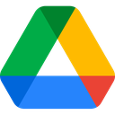

Wade, with Majority
Redline
PRC submissions without the rebuild
July 2026 · space to move
Agenda
Where we left off
Your workflow
Redline
A live demo
What it takes
Investment
01 · Where we left off
What we heard
A checklist of every comment and its answer, ready to paste into Veeva.
Annotations drafted for the team.
Change a word inside a board without touching the file.
An AI that reviews the way PRC does, before you submit.
Connected to Google, where the team already works.
Tiers, with real numbers.
From our first call and Nikki's follow-up.
02 · Your workflow
The workflow we're productizing
Your workflow, in your words.
The same workflow, with Redline in it
What you told us → your week today → your week with Redline.
Runs the submission and revision workflow, with human approval before Veeva.
Redline turns source assets, project context, and prior review history into annotated PRC decks, submission-ready responses, and coordinated revision rounds, inside the tools your team already uses.
In motion this week
03 · Redline
Three jobs
The deck, the annotations, the paperwork, assembled from your assets and your brief.
Read the way your committee reads, before it goes in.
Every comment tracked, answered, and carried into the next version.
Upload your asset for review and its context
Drop in the asset headed for review and the docs around it, then write or record the brief: what this is, what to annotate, what to watch for.
"Annotate every claim and the ISI timing. Flag anything Regulatory would."
The docs give it context. The brief says what to annotate.
Redline builds the deck for you
Annotated according to the format the account prefers and the asset type. Your team comments right on the page, together.

"Zero shame, all facts" stays. It tested well.
Logo to 2.03 in so front matches the ATL run.
Hold release until the QR hits the live URL.
What to annotate
54 pages renumber. Footers update.
Apply to allEvery page editable, in Redline or exported straight to Slides.
Grounded changes and annotations
Every suggestion drafted in place, with the source it traces to. Approve, adjust, or hand the whole list to Redline in one click.
Efficacy, substantiated at week 12
Freddie demonstrated a superior substantiated reduction in events versus placebo, sustained through week 24 in the open-label extension.4
Do not administer to patients with known hypersensitivity. Monitor hepatic function at baseline and during treatment.
Drafted from your annotation profile, round 1 stickies, and the C4TC claims library.
Superior efficacy → Substantiated efficacy
Decimal 2,5% → 2.5% on frames 2, 5, 9
Claim C-07 → relink to approved form
ISI hold → 4-second scroll hold
Footer case number → PRC-2214
Hero star element → route to Creative · PSD
Approve, adjust, or hand the whole list to Redline. Every change stays traced to its source.
Reads it the way your committee will
Before you submit, Redline reads it the way your committee will: what may be flagged, what the annotations missed, and a summary of what it found.
Five items need attention before this goes in: two your committee will flag, two the annotations missed, one it won't call.
"Superior efficacy" phrasingMedical reviewer rejects superiority claims without head-to-head data
Likely flag›ISI hold under 4 secondsRegulatory has flagged this in prior kiosk rounds
Likely flag›Decimals written 2,5% on frames 2, 5, 9house rule: periods, never commas
Requirement check›Claim C-07 drifted from the approved formno longer matches the claims library
Possible issue›New comparative chart on frame 6no precedent in your history, so a person should look at this one
Needs human interpretation›Trained on your history. Sharper every round. Honest about what it can't call.
Shows what may be flagged, and why
Open any flag and Redline shows the reasoning, the precedent it traces to, and the suggested change already drafted in place, awaiting approval.
Superior efficacy, day one
In a 52-week study of adults, efficacy was maintained through week 48 with a consistent safety profile.
Do not administer to patients with known hypersensitivity. Monitor hepatic function at baseline.
A3
Flag A1 · Frame 3 headline
"Superior efficacy" → substantiated efficacy
Round 1 · sticky 27 · Medical reviewer
Remaining flags
Every flag drafts the change into the material, awaiting your approve.
Preps the checklist
Every sticky note drafted, matched to its slide, ready for wherever you submit. Copy, paste, done.
R2-001 · "Superior efficacy" softened
EditorialSlide 3R2-002 · Decimals corrected to 2.5%
EditorialSlides 2, 5, 9R2-004 · Citation C-07 relinked
EditorialSlide 7R2-005 · Footer case number corrected
AccountAll pagesR2-003 · ISI hold extended to 4 seconds · in progress with engineering
EngineeringSlide 12R2-006 · Hero star element removed · queued for creative
Creative · PSDSlide 1Nothing reconstructed from memory. What's still open says so.
Track the feedback
Comments come back and Redline turns them into a worklist: de-duped, mapped to the exact page, tagged by who owns it.
128 stickies in, 96 real to-dos out. Nothing retyped.
From sticky to answer
Open any comment: the original sticky, the page it lands on, and a drafted response, ready to paste.
"Superior efficacy is not substantiated. Soften."Softened to "substantiated efficacy" per the approved comparative form.
Paste to Frame 3 · headline Copy"2,5% is the EU format. Fix."Corrected to 2.5% on every instance, per your style guide.
Paste to Frames 2, 5, 9 Copy"ISI must hold 4 seconds on scroll."Scroll hold set to 4 seconds. Engineering confirmed on device.
Paste to Frame 12 · ISI Copy"Star element reads as a claim. Remove."Removed from the hero. PSD change routed to creative.
Paste to Frame 1 · hero art Copy"Claim C-07 cites the old form."Relinked to the approved comparative form.
Paste to Frame 7 · claim Copy"Kiosk CTA overlaps the fair balance."CTA moved 12px up. Fair balance clear at every size.
Paste to Frame 9 · CTA CopyOne click per response, or the whole set pastes into Veeva in one pass.
Carries approved changes across the submission
Once a change is approved, Redline applies it everywhere it lands: the deck, the asset, every banner size, from one note.
Change every instance of "prep" to PrEP across the submission.
Done. Updated 4 slides, 2 banner sizes, and 1 storyboard frame. 7 instances, every reference intact.
Daily PrEP for adults at risk.
Start PrEP per label.
Ask about PrEP.
VO: "About PrEP."
Redline edits the assets themselves. Bigger creative calls route to your designers as a precise to-do.
Checks every requested change before the next round
Every fix compared against the request it came from. What's addressed is confirmed; what isn't gets caught here, not by the client.
misses caught before the client saw them
93 of 96 requested changes confirmed addressedeach one diffed against its request
ConfirmedView logFrame 12 ISI hold still 2 secondsrouted to engineering
Partially addressedReassign160×600 footer shows the old case numberregenerating from the note
Not foundFix in-toolClaim C-07 phrasing differs from the approved formsent back to editorial
Needs reviewNotify editorialMisses caught, not discovered.
Starts with what Majority already knows
Before the first submission, Redline ingests the tools your team already works in and turns them into working knowledge your team validates.
Where it comes from

Google DriveApproved folders onlyWhat it becomes
validated requirements
recurring review patterns
approved-language precedents
conflicts surfaced for your call
Drive and Slides stay where work lives. Veeva remains the system of record. Only approved folders are indexed. Nothing becomes a rule without a human validating it.
Learns the review patterns that matter
Every round teaches it your committee's patterns: what gets flagged, which phrasing clears, what never survives review.
Reviewer A
Regulatory
Flags spacing patterns on interactive formats. Pre-empt with the 4-second ISI hold.
Reviewer B
Medical
Rejects superiority phrasing without head-to-head data cited inline.
Reviewer C
Legal
Wants every citation tagged and linked before review starts.
Reviewer D
Commercial
Lightest touch, mostly copy tone. Rarely blocks a round.
House rules · C4TC
Annotate everything on interactive products, not just claims
Decimals with periods, never commas
PRC case number on every page footer
Never use "cure", "safe", or unqualified "proven"
New this round · hold the ISI 4 seconds on scroll
Isolated per client, never shared. Submission two starts smarter than submission one.
Adapts to every format
Same process, every format. One note lands in the deck, the banners, the print, the board.
Platform UX templates stay current automatically, so screenshots never get flagged as the wrong version.
Substantiated efficacy, day one
Substantiated efficacy, day one
Day one
Substantiated efficacy, day one
Camera pushes in on the kiosk screen
VO: "Substantiated efficacy."
US-UNBC-001 · PRC-2214
Warm, patient-first, photography-led.
Bold, data-forward, chart-led.
Redline drafts. Your team decides.
Redline does
Builds. Annotates. Pre-reads.
Drafts every response.
Checks every fix.
Remembers every round.
Your team does
Makes the creative calls.
Approves what ships.
Signs off before anything reaches Veeva.
Owns the client relationship.
Nothing ships without your sign-off.
Built to survive your MSA review.
Master services agreement · section 9 · data protection and confidentiality
9.1 Processing environment. All Client Materials shall be processed within the Client's own Google tenant, under access controls administered by the Client.
9.2 Segregation. Each client's knowledge base is maintained in full isolation; no Client Materials shall be disclosed to, or commingled with, the materials of any other client.
9.3 Model training. Client Materials shall never be used to train any shared or public model.
9.4 Provenance and records. Each suggested change shall reference the source from which it derives, and a complete record of approvals shall be retained: who approved what, when, and on which precedent.
9.5 Inspection and deletion. The Client's administrators may inspect, export, or permanently delete any stored material at any time.
9.6 Human approval. No output shall leave the system without the documented approval of a designated reviewer.
Bring your MSA. We built for that conversation.
One workflow, three seats
Gets the checklist and Veeva-ready responses without rebuilding either.
Sees status, review windows, and ownership in one place.
Annotations drafted for them. InDesign untouched.
Same line you saw at the start. Three people working it, one shared state.
Already demonstrated under real PRC pressure
The change
Roughly twenty pages added to a submission deck the night before it was due.
The manual consequence
Every page number and every "return to page" reference in the deck breaks at once.
What the workflow did
Rebuilt the structure, updated the references, regenerated the deck. Run remotely, overnight.
Why it matters
The deck went in on time and got reviewed instead of reconstructed.

Substantiated efficacy, day one
In a 52-week study of adults switching regimens, efficacy was maintained through week 48 with a consistent safety profile. Return to page 41 for study design.
Do not take with medicines that interact. Serious side effects may include changes in kidney function. These are not all the possible side effects. See full Prescribing Information on pages 52 to 54.
Demonstrated during the Feed engagement. One live project, not yet an aggregate benchmark. [TODO: Cal confirms facts + engagement name]
04 · A live demo
Proven to work.
You already sent us real submissions. We'll run one live right now.
The build behind this deck is running today. After Friday, the link keeps working: open it, load an asset, watch the deck assemble itself.
[TODO: Cal supplies the demo URL · sanitized data only]
Import an asset and build the deck structure
Draft the functional annotations
Surface one likely flag with its source
Turn one comment into an assigned change and a Veeva-ready response
05 · What it takes
What it takes to build
Fixed, one-time build.
Dedicated for the build.
On the product and your asset families.
Weeks 1 and 2 are a calibration sprint on your real assets: kiosk, social, storyboard, banner, print. Included, not extra.
How we measure success
The bar at week six
What you walk away with
You own the product.
What one submission costs.
Deck built and annotated, box by box Redline
2–3 daysInternal review, plus the all-day deck session Redline
1 day, whole team150 stickies reconstructed into Veeva responses Redline
hours, every roundCheck-changes by eye before resubmission Redline
hours, every roundThe round you lose to one missed callout Redline
a weekAt your volume, The Editor pays for itself before submission 25.
Conservative assumptions: ~2 submissions a month, ~40 hours of mechanics each. We'll swap in your real numbers Friday. [TODO: Cal confirms or replaces these numbers]
06 · Investment
Investment
Works from what you give it: the current submission, this round's feedback, your guidelines.
- Deck generation from your assets, your brief, or your voice
- Annotations drafted in your conventions
- Committee-aware review from your guidelines and the current round
- The checklist, formatted for Veeva
- Comment ingestion and the worklist
- Sticky-note responses drafted, ready to paste
- Check-changes before every round
- Slides import, export, and basic connected sync
Everything in the Engine. Ingests your full PRC archive and compounds per client. [TODO: Cal confirms tier name]
- Your full PRC history ingested as a working knowledge base
- Ongoing learning per client: every round makes the next one smarter
- Calendar and PRC schedule management: windows, cutoffs, and deadlines tracked per submission
- Redline edits the assets themselves: copy, layout, frames, every banner size. Anything bigger routes to your team as a precise to-do.
- Approved-language propagation across the submission
- The claims library: approved language harvested, drift flagged
- Meeting capture feeding the worklist